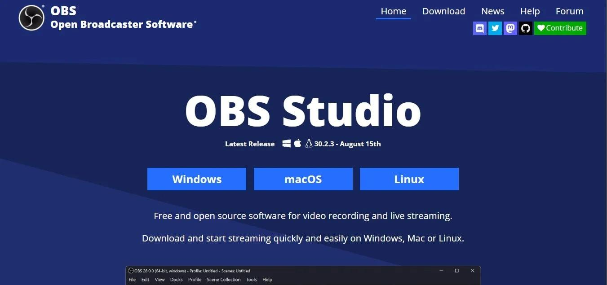
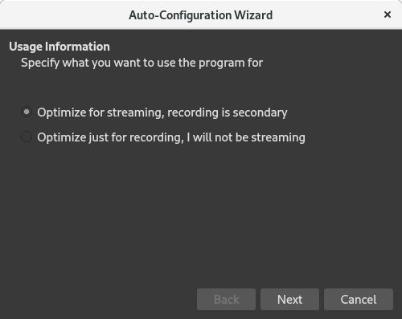
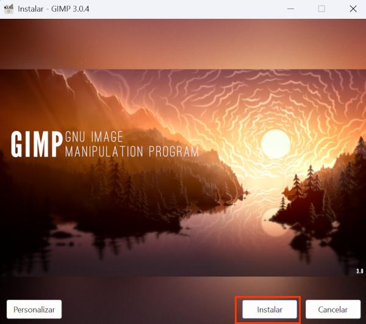
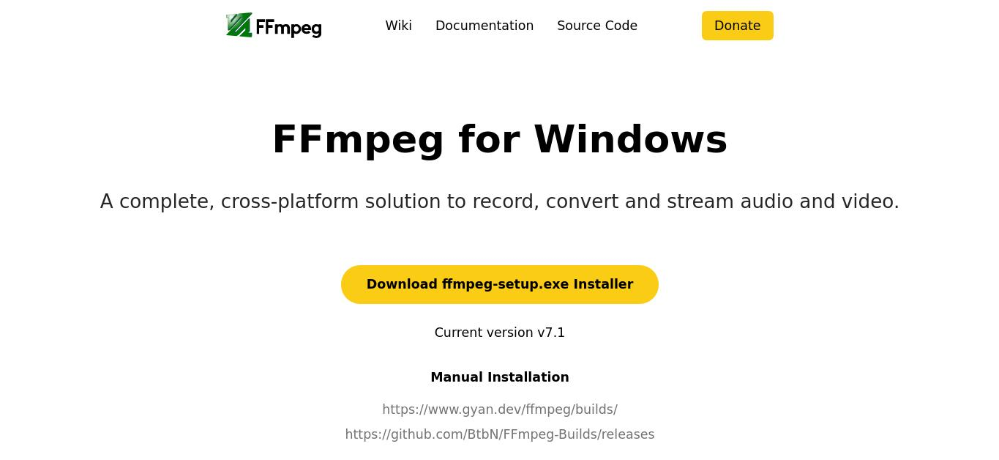
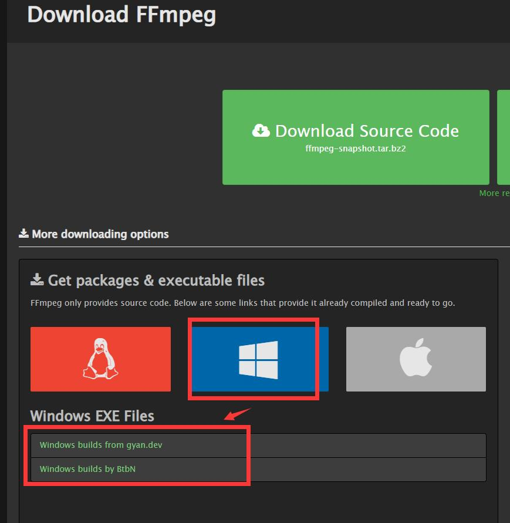
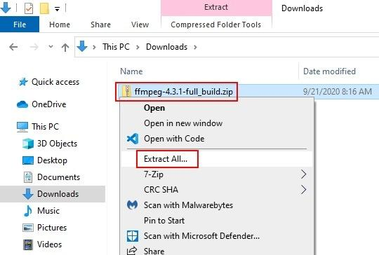

📘 Day 2: Essential Media Tools – OBS, GIMP, FFmpeg
🎥 OBS Studio – Screen Recording & Live Streaming
Introduction: OBS Studio is a free, open-source software for screen recording, live streaming, video capture, and audio recording. It is widely used by YouTubers, gamers, teachers, and content creators.
- Record computer screen
- Live stream on YouTube, Twitch, Facebook
- Record tutorials and lectures
- Add webcam and microphone
- Create professional streaming layouts
Purpose: To create high-quality video recordings and live streams without paid software.
Installation Steps (OBS Studio)
- Open official website: obsproject.com
- Download OBS Studio: Click Windows (or your OS). Download starts automatically.
- Open installer: Run the .exe file, click Next.
- Accept license: Click I Agree.
- Install: Click Install and wait.
- Launch: Click Finish, OBS opens.
- Auto‑configuration wizard: Choose Optimize for Streaming or Recording, complete setup.



🖌️ GIMP – Free Image Editing
Introduction: GIMP (GNU Image Manipulation Program) is a free image editing software similar to Photoshop. Used for photo editing, background removal, logo design, thumbnails, and graphic design.
- Photo editing & retouching
- Background removal
- Logo design
- Thumbnail creation
Purpose: Provide professional image editing tools freely for students, designers, and creators.
Installation Steps (GIMP)
- Open official website: gimp.org
- Download: Click Download GIMP, choose your OS.
- Run installer: Open downloaded file, click Install.
- Wait: Installation takes a few minutes.
- Launch: Click Finish, open from desktop/start menu.


🎬 FFmpeg – Command‑Line Multimedia Powerhouse
Introduction: FFmpeg is a powerful command‑line tool for video/audio conversion, compression, recording, streaming, and editing. It is essential for batch processing and automation.
- Convert video/audio formats (MP4 to MP3, etc.)
- Compress large videos
- Extract audio from video
- Record screen/stream media
Purpose: Process multimedia files efficiently using simple commands – ideal for developers and power users.
Installation Steps (Windows)
- Open official website: ffmpeg.org
- Download Windows build: Click Download → choose Windows build from recommended providers.
- Extract ZIP: Use WinRAR or 7‑Zip.
- Move folder: Place extracted folder to
C:\ffmpeg - Add to PATH: Search “Environment Variables” → Edit system environment variables → Environment Variables → Path → Edit → Add
C:\ffmpeg\bin. - Verify installation: Open Command Prompt and type
ffmpeg -version. Version info appears if successful.




📊 Tool Comparison
| Feature | OBS Studio | GIMP | FFmpeg |
|---|---|---|---|
| Primary Use | Screen recording / streaming | Image editing | Video/audio conversion & processing |
| Interface | Graphical | Graphical | Command‑line |
| Learning Curve | Low | Medium | Steep (requires terminal) |
| Key Strength | Real‑time streaming & layouts | Free Photoshop alternative | Batch processing, automation |
| Best For | Creators, streamers, teachers | Designers, photographers | Developers, advanced users |
📌 Key Takeaways
- OBS Studio enables free, high‑quality screen recording and live streaming.
- GIMP provides professional image editing capabilities at zero cost.
- FFmpeg is an indispensable command‑line tool for video/audio manipulation and automation.
- Mastering these tools enhances productivity in content creation, documentation, and project work.
- Knowing how to install and configure PATH (for FFmpeg) is a valuable system administration skill.
🎯 Conclusion
In this session, we explored three essential free media tools: OBS Studio for recording, GIMP for image editing, and FFmpeg for command‑line media processing. Understanding their installation workflows and practical uses will greatly assist in creating internship documentation, tutorials, and project content. These skills are directly applicable to technical roles that require media production and automation.